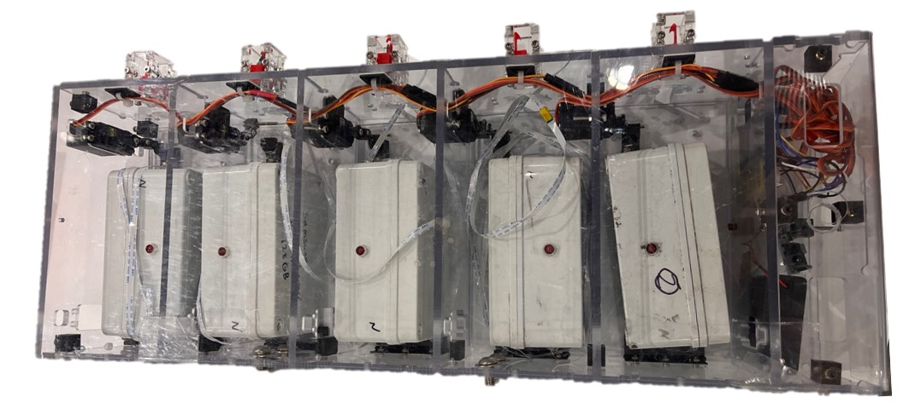

The custom nitrate sensor used to monitor corn stalks weree developed by our collaborators at Iowa State University.
These micro sensors rely on electrochemical reaction from the custom solution applied on the surface of the PCB. This electrochemical reaction generates potential across the two pads, which we store into the data logging unit.
More details about the sensor can be found in their research publication .
To deploy these custom sensors, however, there were a lot of other electro mechanical projects that needed to be developed to support the deployment of these sensors.
As we were interested in monitoring the nitrogen concentration of a single stalk over its growth cycle, we needed to develop data logging unit that could last over a month.
In addition, we had to create a deployment mechanism that would release these data loggers after the robot has inserted the sensor into the corn plant before driving to inspect a different stalk.
Nitrogen to Voltage Calibration
These custom nitrate sensors require a calibration process to map nitrogen concentration (measured in PPM) to voltage.
Each nitrate sensor leads to a unique mapping, which is why it's important to understand the calibration process, as well as understand how long it takes for a sensor reading to stabilze.
Discussion of the calibration process for the plots below.
Voltages at varying concentration
analog to ppm calibration
Data Logger Design Improvements
Overview of design improvements for weather stability, easier interpretability, and battery management.
Specifications for battery life, current draw, sample frequency.
This version of the ebox is designed with the goal of (1) reducing the size of the ebox dimension,
(2) improving the life span of one deployment, (3) improving the complexity of the electric circuit.
The two rechargeable 18650 batteries allow the ebox to record data continuously for approximately 100 days.
The added LED indicator shows the status of the box, where blinking every 5 seconds means the box is working normally,
rapid blinking indicates an error with the firmware, and no lights on means out of battery or further errors with the firmware.
This design contains 4 parts that are 3D printed. You can access the STL files through this link to STL files
Printing these parts with Onyx using the Markforged printer is recommended since PLA has the risk of melting in an enclosed environment in the field in summer.
Two slots/holes need to be machined to the body of the ebox. The hole for LED should be a clearance hall of 8mm, and the hole for sensor FPC should be machined with a 0.25” diameter drill.
For future improvements, suggested items are adding a shock-absorbing component, for example, printing the spacer with compliant materials like TPU could improve the PCB boards’ ability to survive when dropped from the deployment mechanism.
This project is designed on Fusion360, if you would like access to the Fusion folder, please email xinyuwa3@andrew.cmu.edu
Data Logger Deployment Box
We created a datalogger deployment mechanism that could release individual dataloggers to the ground near the corn once the sensor has been inserted.
Each box in housed in a slot where the bottom lid could be opened with a four-bar link latched to a rotating servo.
These latches can be opened/closed through either the serial commands on the PC or manually through the button pads on the side.

There were couple design interations on the deployment box to improve the wiring release mechanism as well as power efficiency.
The first iteration had a wire management on coil setup to prevent tangling. However, although it did prevent tangling, the coil sometimes provided enough resistance so the datalogger would not fall out.
We ended up removing the wire management into a coil, and instead just isolated wires from crossing into different cartridges as a simple workaround.
Lastly, we modified the four bar link design with a latch mechanism to not draw power while its inactive.
Without the latch, the servo would be drawing current to hold the boxes in place and would quickly deplete the external battery source.
The code for the Arduinos for the Datalogger and Deploy Box can be found in the fimrware section of this Github repo: